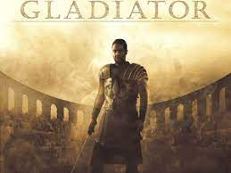
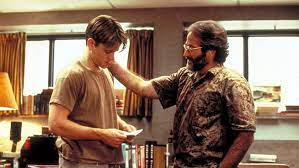

This is a list of my top 5 movies of all time. I think that these movies
all have something
that sets them apart from the rest and makes them
especially good movies. Here is my list:
Moneyball is a great movie starring Brad Pitt as Billy Beane, the
Oakland Athletic's GM in the late 90's.
Moneyball tells the cinderella story
of the Oakland A's and Billy Beane's journey to the longest winning
streak in MLB history,
with the help of his assistant Paul DePodesta, played by Jonah Hill. This is overall
a great movie of hard work and great minds coming together to get make it to the top. Therefore,
this movie makes my Top 5 List.
Movie Trailer
(Credit: Sony Pictures Releasing UK)

Starring Russell Crowe as Maximus, Gladiator is the epic story of a legendary
Roman General'
Journey from glory to gladiator. He loses his power and influence,
but makes his way back to
Rome and attempts to overthrow the corrupt emperor.
Movie Trailer
(Credit: Fandango, Universal Pictures, Dreamworks Pictures)
In Fight Club, Edward Norton stars as the narrator, and Brad Pritt as Tyler Durden.
This movie
is about Edward Norton's transformation from boring life to creating
a Fight Club. It is where a group
of men fight gloveless, and without protection
and it helps them solve a lot of problems in their life.
Tyler gets carried away
with the Fight Club and the Narrator is dragged in.
Movie Trailer

Good Will Hunting is a film about a genius mathmetician who was a janitor at Harvard. Will Hunting,
played by Matt Damon, is the janitor and is cleaning the halls one day when he solves a seemingly
impossible math equation. A proffessor at Harvard tries to learn from Will's knowledge and will falls
in love with a Harvard student.